나를 위한 질플란트
나를위한 산부인과의
“질플란트 (HD IMPLANT-F™)”
는
탄력을 잃은 질에
콜라겐을 공급해 질벽의 두께와 탄력을
개선하는 질타이트닝 시술입니다
- 수술시간 20분 내외
- 회복기간 3주
- 입원여부 없음
- 마취방법 수면+국소마취
나를 위한 질플란트
-
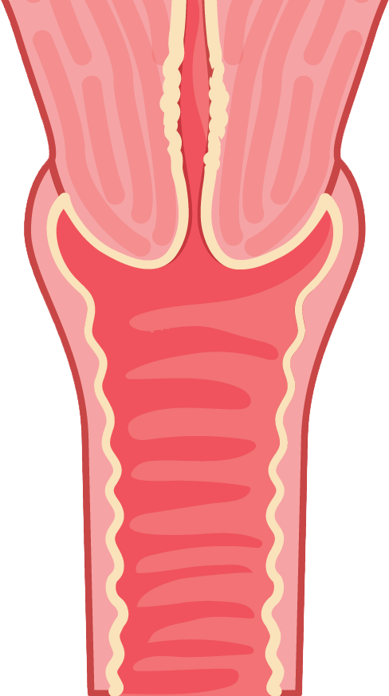
질플란트는 매듭 형태의 가공된 동종진피 콜라겐을 질 내에
삽입해
자연스러운 콜라겐 생성을 유도
하여
질 탄력 볼륨
효과를 장기적으로
누릴 수 있는 질 타이트닝 시술입니다.
-
HD IMPLANT-F

-
HD IMPLANT 구조
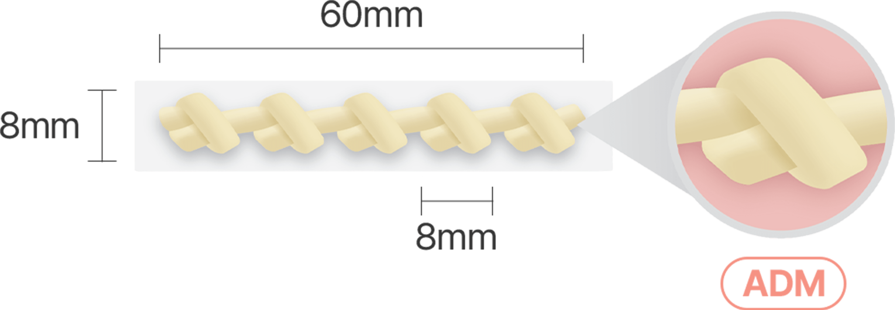
미국 AATB 인증을 받은 인체 유래 동종 진피로
100% 진피조직이기에 오랜 시간 볼륨감이 유지되며,
질주름을 복원시키는 효과가 탁월합니다.
검증된 콜라겐 품질과 효과
-
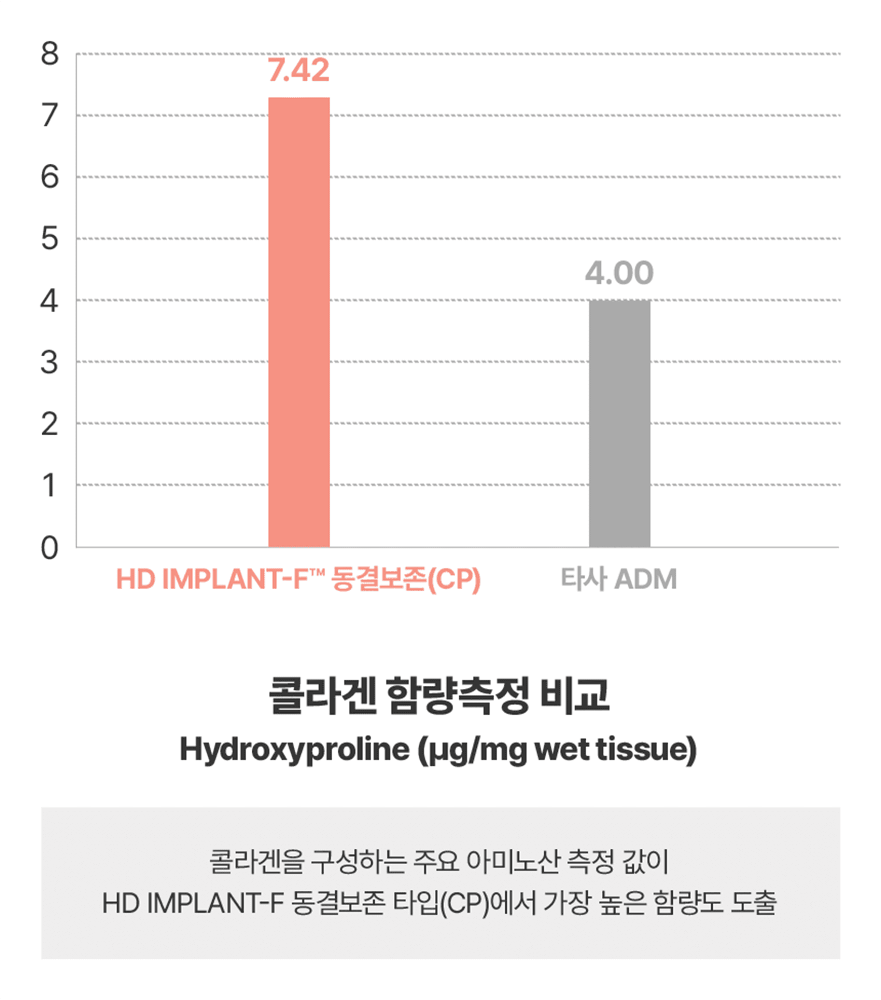
미국 AATB 공인 기관 적격성 평가 통과. MFDS 승인,
EATB 기준
우수등급으로 검증된
안전하고 효과적인 시술 -
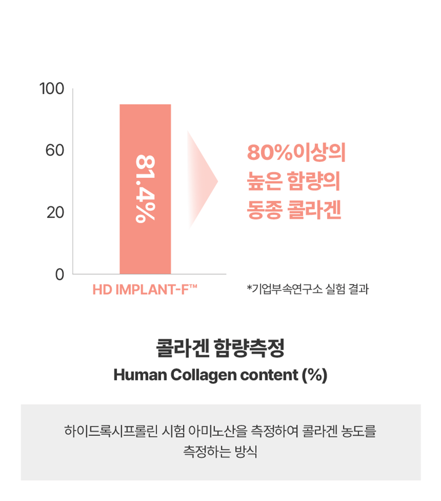
81.4% 높은 콜라겐 함량으로 질벽 깊숙한 곳부터
차오르는
도톰한 질 벽의 변화, 질 주름 형성 -
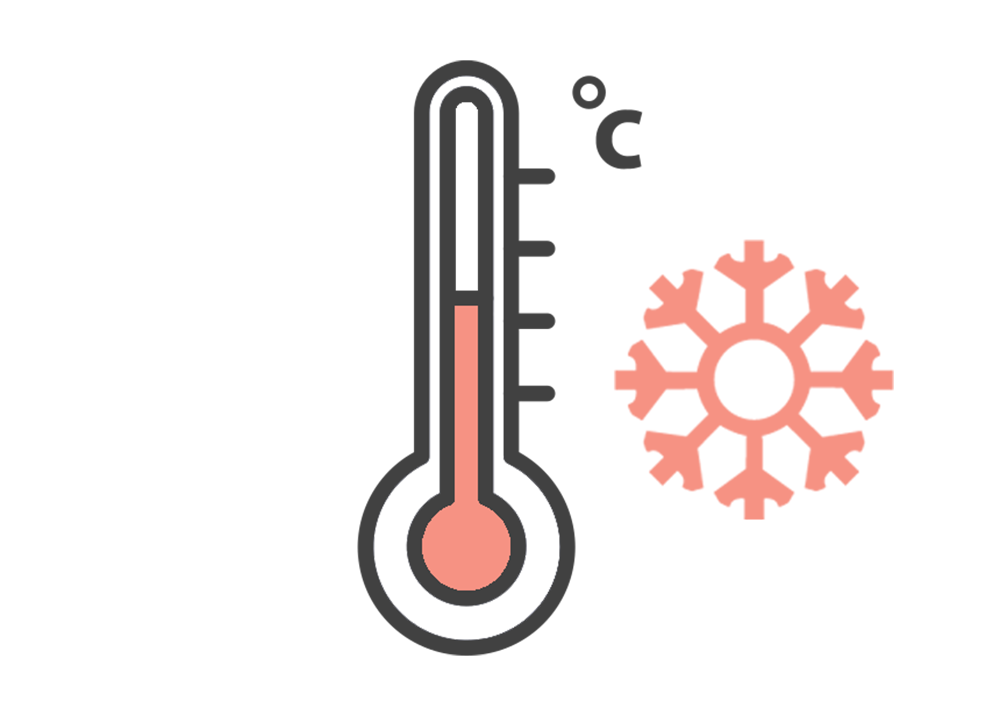
특허받은 HD IMPLANT™의
저온 냉동건조 특허기술로
콜라겐 구조
손상 방지, 우수한 조직 재생 효과 -
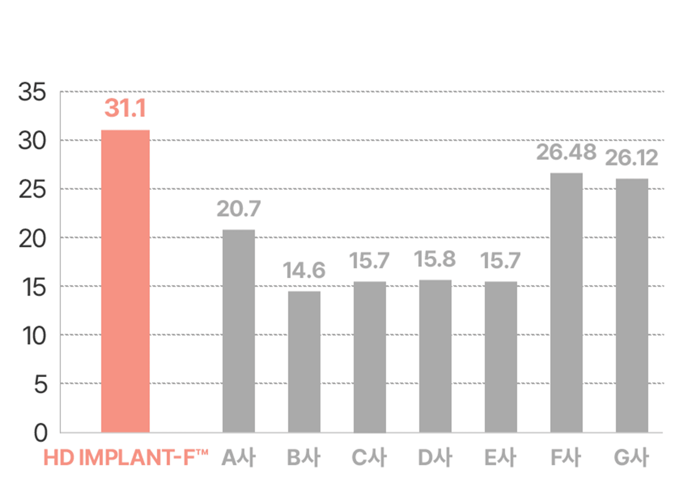
우수한 가공 과정으로
고품질의 뛰어난 인장강도로
탄탄하고 오래가는 질 안티에이징 효과
시간이 지날수록 차오르는 콜라겐
-
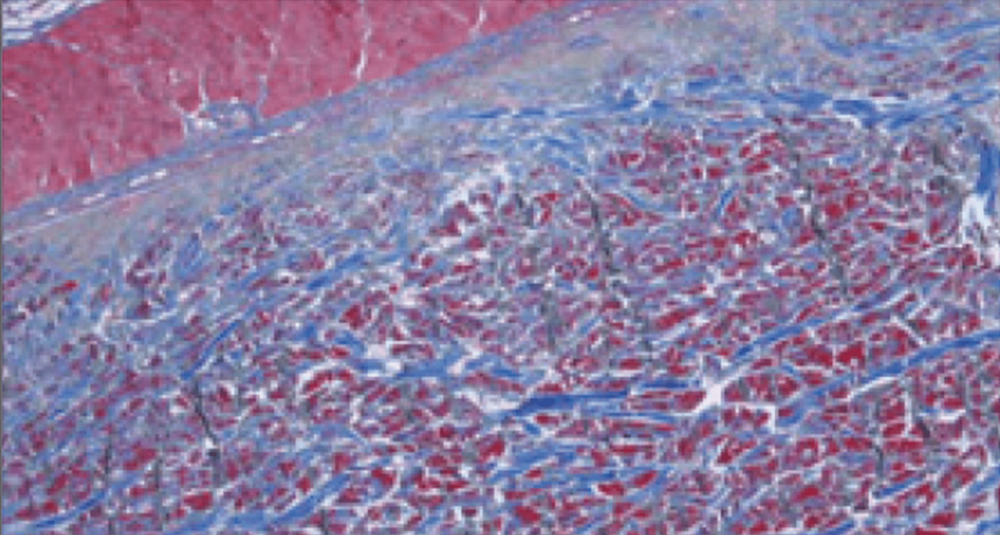
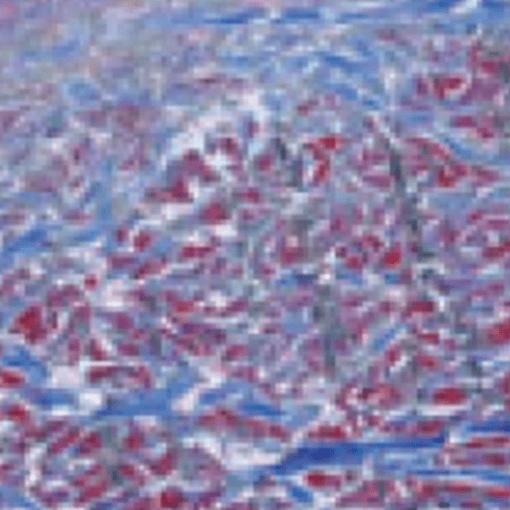
1주
-
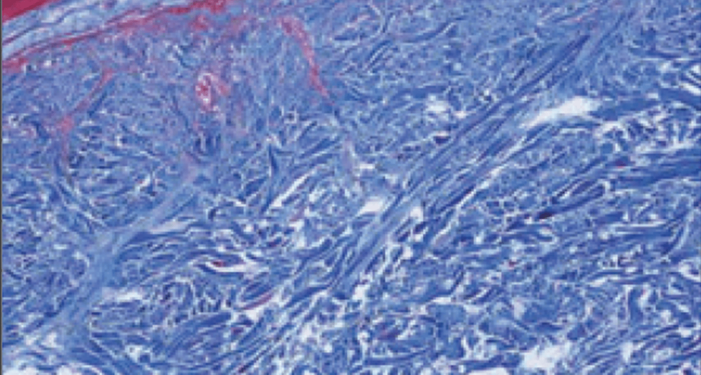
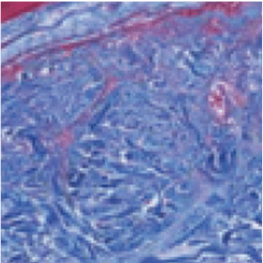
2주
-
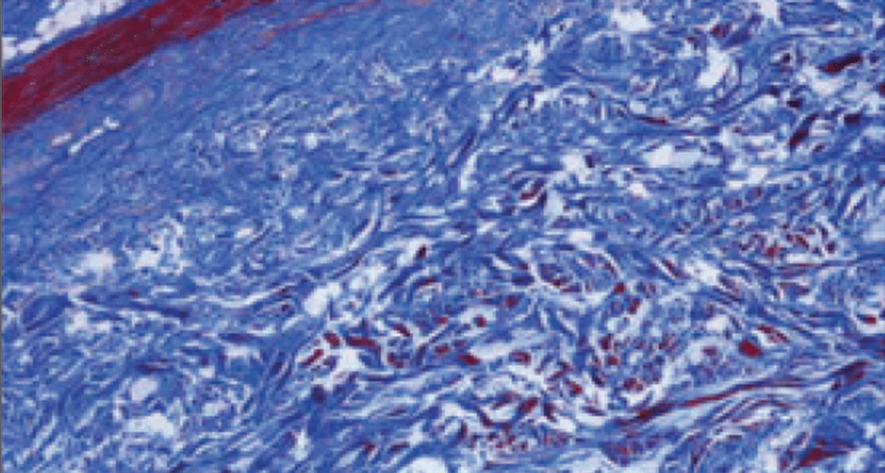
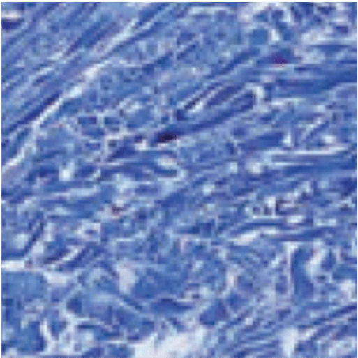
3주
콜라겐 생성의 유의한 증가, 뛰어난 조직 재생 효과로
점점 더 탄탄하고 건강한 질벽으로 변화
시술 과정
-
01
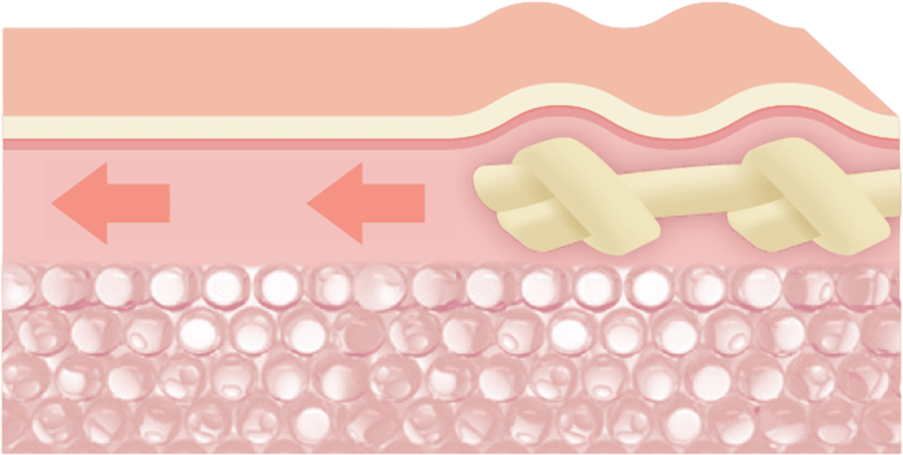
노화 및 출산 등으로 평평해진 질벽에 HD IMPLANT-F 를 삽입
-
02

HD IMPLANT-F가 콜라겐 생성을 자극하여 질점막 탄력 개선
-
03
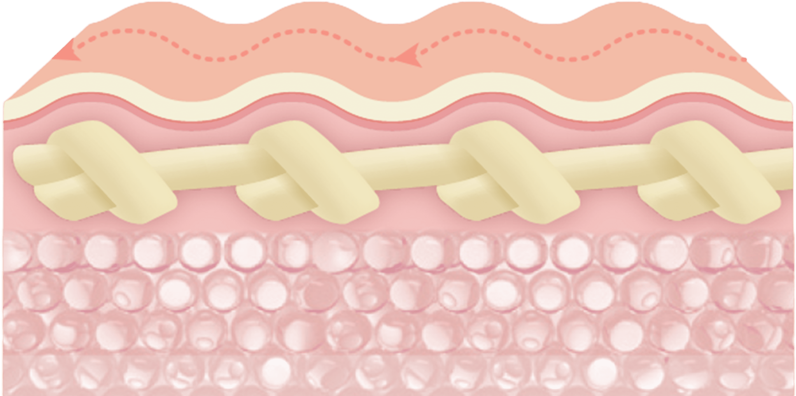
매듭 모양의 HD IMPLANT가 질벽을 굴곡지게 만들어 성감 향상
-
04
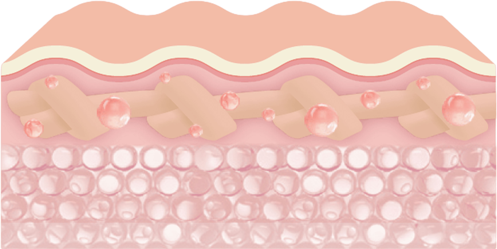
질벽에 생착되면서 신생혈관이 생성되며 신경세포와 분비샘의 증가로
흥분도와 애액 양을 증가시켜 질건조를 개선
나를위한 질플란트의 특별함
-
최소 침습 시술로 간단하고 빠른 시술과 회복 기간
-
80% 이상의 높은
콜라겐 함량으로 탁월한 볼륨감과 오랜 유지 기간 -
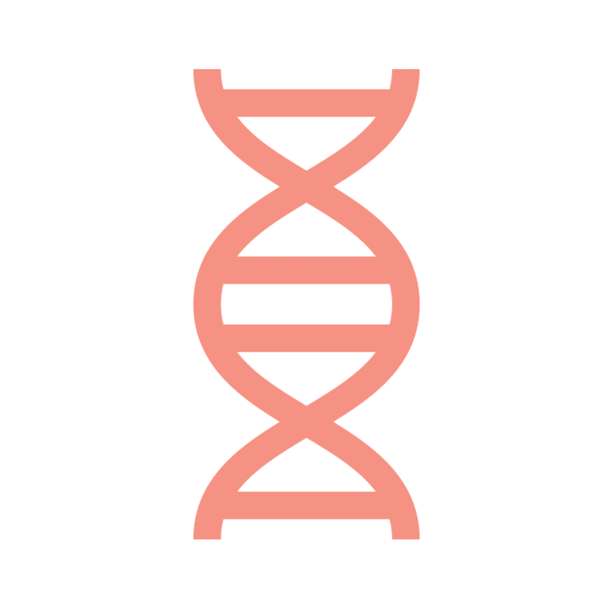
진피가 생착되어 자기 조직화 및 콜라겐 생성
-
질필러, 질타이트닝 레이저와 동시 시술 가능
나를위한 질플란트 효과
-
섬세한 질 주름 복원
매듭 구조 삽입으로 섬세하고 자연스러운 주름 형성 -
질 환경 개선
진피가 생착되어 자기 조직화 및 콜라겐 형성,
애액 증가로 질 이완, 질 방귀 등 질 환경 개선 -
성감 향상
신경세포와 분비샘 증가로 질벽과 성감 개선을 통한
남녀 모두의 성적 만족도 향상 -
근본적 질 탄력 회복
콜라겐 섬유 생성이 단계적으로 유의미하게 증가해
조직 재생으로 자연스러운 질벽 탄력을 완성합니다.
질플란트 대상자
-
출산 후 질 탄력이 저하된 경우
-
성적 자신감 및 성감 증대가
필요한 경우 -
성질축소가 필요하지만
수술이 부담스러운 경우 -
성감이 많이 둔화된 여성분
-
밑이 빠지는 듯한
느낌이 나는 여성분
질 이완 진단기
를 통한
질압측정
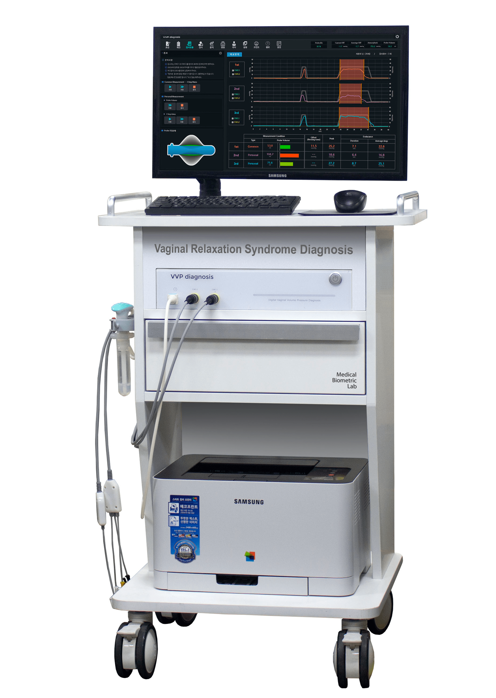
나를위한 산부인과에서는 비비브 질타이트닝,
질 축소술, 질 필러 시술 등에 질압측정을 통한
비교 데이터를 제공해 드리고 있습니다.
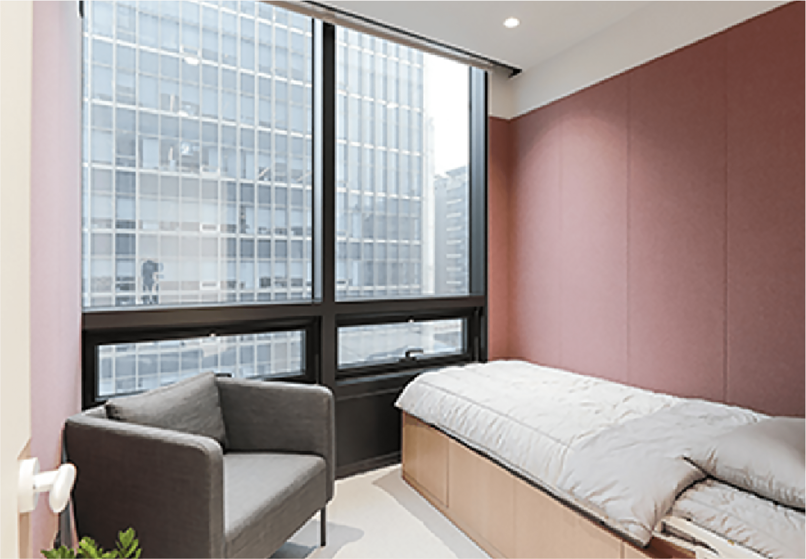
프라이빗한 휴식 과 회복
나를위한산부인과에서는 치료를 받는
환자분들이
긴장을 완화하고 편안한
마음으로 쉬실 수 있도록
고급스럽고
편안한 분위기의 1인 회복실을 제공합니다.
질플란트
시술 후 주의사항
시술 후 주의 사항은 개인 차가 있을 수 있습니다.
-
01
시술 당일에도 샤워는 가능합니다.
-
02
시술 직후 출혈 방지와 출혈량 체크를 위해 질 내부에 거즈를
넣어두는 경우에는, 귀가 후 2시간 후에 자가 제거하시기 바랍니다. -
03
시술 시 사용하는 봉합사는 성형 전문 실로 자연 흡수되는 소재지만,
시술 후 7~10일이 지나도 녹지 않을 경우
의료진의 지시에 따라
제거합니다. -
04
시술 후 질플란트의 안정적인 안착을 위해 4주간 성관계는 피해주세요.
-
05
시술 후 7일까지는 출혈이 동반될 수 있으므로, 생리대 또는 라이너를
착용해 주세요. -
06
시술 후 항문과 질 주변에 묵직한 느낌이 들거나, 밑이 빠질 듯한
통증이 1~2일 정도 지속될 수 있습니다.
시술 후 생길 수 있는 자연스러운 증상이오니 걱정하지 마세요. -
07
시술 후 1주일간 탐폰, 음주, 탕 목욕, 자전거 운동과 같이 시술 부위를
자극할 수 있는 행위는 피해주시고
흡연과 음주는 안정적인 질플란트
안착을 위해 삼가해주세요. -
08
시술 후 생리대를 다 적실 듯한 과도한 출혈이 있을 경우 병원으로
연락 주세요.